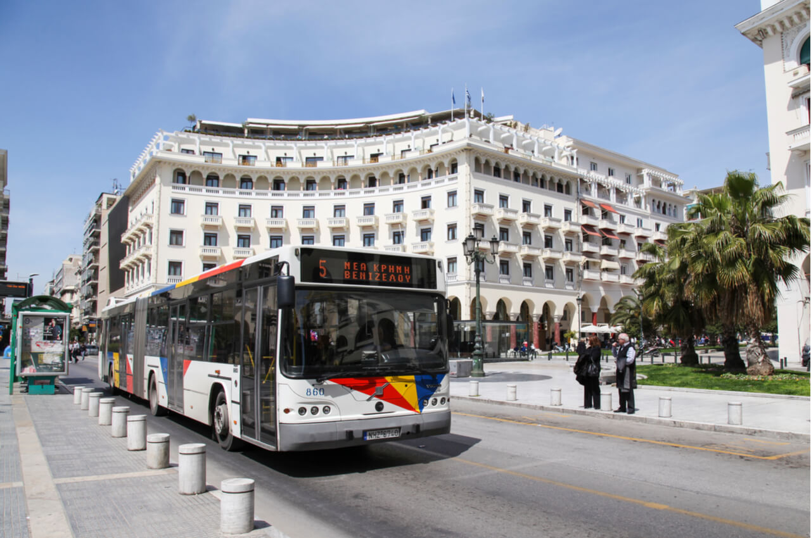

Εδώ, συγκεντρώνονται όλα τα λινκς που χρειάζεται κάποιος για να επιβιώσει στη Θεσσαλονίκη.
Μεταφορικά Μέσα
Λεωφορεία ΚΤΕΛ
Στη Θεσσαλονίκη, τα λεωφορεία όλων των πόλεων είναι συγκεντρωμένα στο ΚΤΕΛ Μακεδονία, εκτός του νομού Χαλκιδικής (ανήκουν σε ιδιώτη και μπορείτε να πάτε με το αστικό 45Α και το 36 με γράμματα, π.χ. 36Ε, 36Η, τώρα για λεπτομέρειες στα γράμματα, δε γνωρίζω μάνα μου).
Στα ΚΤΕΛ Μακεδονία μπορείτε να πάτε με τα αστικά λεωφορεία 8,12,31 και 78Ν. http://www.ktelmacedonia.gr/
Τρένα
Ο οργανισμός που είναι υπεύθυνος για τα τρένα στο νομό Θεσσαλονίκης είναι ο Ο.Σ.Ε. Υπάρχουν πολλά αστικά λεωφορεία που τερματίζουν στο σταθμό, με τα οποία και μπορεί κάποιος να φτάσει, μερικά από αυτά είναι το 2, 3, 5, 6, 10, 14 κλπ.
Από τον προαστιακό, εκτελούνται δρομολόγια προς τη Λάρισα και την Έδεσσα με συχνότητα περίπου ανά μιάμιση ώρα. Περισσότερες πληροφορίες στη σελίδα http://tickets.trainose.gr/dromologia/
Αστικά Λεωφορεία
Τα λεωφορεία καλύπτουν ένα μεγάλο μέρος της πόλης και γενικά εξυπηρετούν ένα μεγάλο μέρος του πληθυσμού. Σίγουρα, θα μπορούσαν να είναι συχνότερα, αλλά κανείς δεν είναι τέλειος. Οι τιμές των εισητηρίων είναι οι εξής:
Βασικό Εισιτήριο Μιας Διαδρομής 0,80 ευρώ και 0,90 μέσα στο λεωφορείο Βασικό Εισιτήριο Διπλής Μετακίνησης 0,90 ευρώ και 1 ευρώ μέσα στο λεωφορείο
Μειωμένο Εισιτήριο Μιας Διαδρομής 0,40 ευρώ και 0,50 μέσα στο λεωφορείο Μειωμένο Εισιτήριο Διπλής Μετακίνησης 0,50 ευρώ και 0,60 μέσα στο λεωφορείο
Μηνιαία Κάρτα 30 ευρώ Φοιτητική Κάρτα 15 ευρώ
Περισσότερες πληροφορίες http://oasth.gr/index.php Έξυπνη κίνηση από τον ΟΑΣΘ η δυνατότητα εύρεσης της βέλτιστης διαδρομής καθώς και η δυνατότητα να βλέπει κάποιος ακόμη και από το κινητό του, με ακρίβεια λεπτού το πότε θα περάσει το επόμενο αστικό.
Πολιτιστική γραμμή 50
Η πολιτιστική γραμμή με το νούμερο 50 είναι ίσως ότι πιο χρήσιμο για έναν τουρίστα στην πόλη μας, μιας και περιλαμβάνει όλα τα αξιοθέατα που πρέπει να δει κάποιος που επισκέπτεται τη Θεσσαλονίκη. Το πολιτιστικό λεωφορείο ξεκινώντας από την αφετηρία της γραμμής, στο ύψος της πλατείας του Λευκού Πύργου και αφού διέλθει από τα κύρια μουσεία επί της οδού Μαν. Ανδρόνικου, διασχίζει τις οδούς Αγγελάκη, Αλεξ. Σβώλου, Ερμού, Βενιζέλου, Αγ. Δημητρίου και στη συνέχεια ανεβαίνει μέσω των οδών Ιουλιανού, Ολυμπιάδος, Θεοτοκοπούλου και Ακροπόλεως στα Βυζαντινά κάστρα μέχρι τον πύργο Τριγωνίου. Ακολούθως θα επιστρέφει προς το Ιστορικό Κέντρο μέσω των οδών Κλαυθμώνος, Ακροπόλεως, Λεωφ. Όχι, Ελένης Ζωγράφου, από όπου οι επιβάτες απολαμβάνουν τα Ανατολικά τείχη και την πανοραμική θέα της πόλης και του Θερμαϊκού κόλπου. Η διαδρομή ολοκληρώνεται διαμέσου της οδού Εθνικής Αμύνης και καταλήγει στο Λευκό Πύργο. Επίσης προτείνονται στους επισκέπτες και 3 διαδρομές πεζοπορίας, αφού οι χρήστες της πολιτιστικής γραμμής έχουν τη δυνατότητα, με το ίδιο εισιτήριο, που ισχύει για 24 ώρες, να αποβιβάζονται σε οποιαδήποτε στάση της διαδρομής και αφού ολοκληρώνουν την περιήγησή τους, να συνεχίζουν με επόμενο δρομολόγιο. Εντός του λεωφορείου υπάρχει συνοδός, που θα είναι στη διάθεση του επιβατικού κοινού.
Το κόστος του εισιτηρίου είναι 2 ευρώ και 1 ευρώ το μειωμένο. Αφετηρία και τέρμα της πολιτιστικής γραμμής είναι ο Λευκός Πύργος.
Αεροδρόμιο
Το αεροδρόμιο της πόλης είναι το δεύτερο μεγαλύτερο της χώρας, βρίσκεται 14 χιλιόμετρα έξω από την πόλη και εξυπηρετεί 3,5 εκατομμύρια επιβάτες το χρόνο. Από το Μάιο, ξεκίνησε τα δρομολόγια της η Ryan Air και τώρα, έχει καθημερινά, πολλές φθηνές πτήσεις σε πόλεις όπως η Φρανκφούρτη, το Μιλάνο, η Στοκχόλμη και το Όσλο, περιοχές που μέχρι πρότινος θεωρούνταν απαγορευτικές για το μέσο κάτοικο. Ένα παράδειγμα των φθηνών πτήσεων είναι ότι τα πρώτα εισιτήρια που προσφέρονταν όταν ξεκίνησαν τα δρομολόγια ήταν στα 2 ευρώ!
Περισσότερες πληροφορίες http://www.thessalonikiairport.gr/